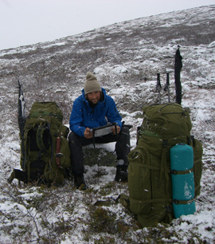

Etappe 3: Kautokeino - Abisko/Narvik
Onsdag 08. Oktober 2008 av: Montarou
Det er ingen tvil. Vinteren kommer enten vi liker det eller ei. Enkelte netter ligger snøen tung på teltet, og at vannposen får et centimeters tykt lag is i løpet av natten begynner å bli vanlig. Det ligger allerede is på mange av vannene. Jeg innser at det kan bli problematisk å komme seg over enkelte fjell til fots, eksempelvis Saltfjellet i sen oktoberdrakt. Vi snakker med Jon Sommerseth og Olav Soleng i Narvik og Omegn turlag om ruta videre. Saltfjellet blir beskrevet som svært værhardt, særlig på denne tiden av året. Og det kan fort komme mye snø. På den andre siden kan det selvfølgelig være bart til november. Jon's prognose på 50/50 om det er mulig å komme seg over Saltfjellet på femte etappe er noe nedslående, men også pirrende og spennende. Alt avhenger av været. Det visste jeg jo, men hadde ikke ventet at det var så stor sannsynlighet for å rent fysisk bli stoppet av å bakse rundt på fjellet med snø til knærne. I tillegg blir dagene kortere og kortere. Å gå 25-30 km blir ikke bare snakk om krefter og gnagsår, men om mørket sluker fjellene og terrenget - og dermed saboterer orienteringen - før vi er fremme ved dagens mål.
Fjellet, vidda og bjørkeskogen er vår. Vi møter ikke folk. Det er tydelig at sesongen er over og at ferdsel ute i denne perioden er for spesielt interesserte. Men det må vi vel kunne kalle oss?

Den romantiske forestillingen om å ha god tid, lytte til regnet og røyke pipe og slappe av, har blitt byttet ut med dagsmarsjer på opptil 34 km, uhelbredelige gnagsår, forflytningspress og vekkerklokke. Pipen måtte sendes hjem p.g.a vekt, kortstokken har ikke blitt brukt en eneste gang (!) på over 40 dager og solcellepanelet ble sendt sørover ved Skaidi. Men ikke misforstå - vi setter pris på det!
Før vi legger ut på reisen over fjellet fra Finland/Sverige-grensen og sørover mot Tornetrask har vi en velfortjent hviledag. Det passer rimelig bra ettersom Hans kunne fortelle at et heftig uvær er på vei inn fra Nordsjøen. Etter å ha gått 84 km på tre og en halv dag er vi klare for litt bælfeit svineribbe, noe Hans og Bodil disket opp med! Vi mesker oss i teltet med øl, vin, brød, melk og annet snadder fra sivilisasjonen. Mandagen skrider ferden videre. Fjell rundes og nye horisonter erobres. Det virker endeløst. Men etter en ukes tid sitter vi i båten til en kar som heter Rolf som frakter oss over den enorme innsjøen Tornetrask. Med seg har han en koselig elghund som prøver å hoppe opp på brygga i det vi legger i land. Det den ikke helt har skjønt er at den fortsatt er bundet fast i rekkverket på motsatt side av båten. Med et rykk blir den stakkars hunden holdt igjen av tauet en god halvmeter over vannet. Hunden prøver febrilsk å svømme med bakbeina plaskende i vannflaten, hengende i halsbåndet. Jeg bruker noen sekunder på å bestemme meg for om jeg skal løfte hunden opp i båten eller knyte opp båndet. Mens jeg prøver å ta den riktige beslutningen henger hunden der og spreller og jeg lurer på om den kommer til å klare seg. Jeg knyter opp knuten og hunden plasker ned i det iskalde vannet. Tydelig forfjamset av begivenhetene prøver den å klatre rett opp bryggesiden. Det er selvsagt umulig, men altså ikke i hundehjernen. Rolf geleider hunden i båndet langs brygga og inn til land. I det hunden hopper inn i bagasjerommet med et bestemt byks, fyker den like gjerne rett inn i baksiden av baksetene - den kunne ikke komme seg inn i bilen fort nok!
Jeg lytter ekstra godt til værmeldingene disse dagene. Teisen melder for det meste liten kuling, stiv kuling og sterk kuling. Langs hele kysten og i "utsatte strøk" blir det hårføner-vær. Det kan bli spennende. I dag er det hvert fall blå himmel i Narvik og de omliggende fjellene blir store, klare og flotte.
I helgen har vi hatt besøk av Edwin og Hege som har tatt turen fra henholdsvis Tromsø og Harstad. Vi har en særs hyggelig helg og vinker dem farvel på søndagen som for øvrig blir en lat dag.
Tirsdag 07.10 (dvs igår) hadde Emil kvart-hundre-årsdag og vi spiste på byens beste kjøkken - elgytrefilet, and og reinsdyr stod på menyen.
Siste dag før avreise er på sedvanlig vis full av trivielle gjøremål vi allerede burde ha gjort. Punktum må altså settes her.
<< Tilbake til Reisebrev